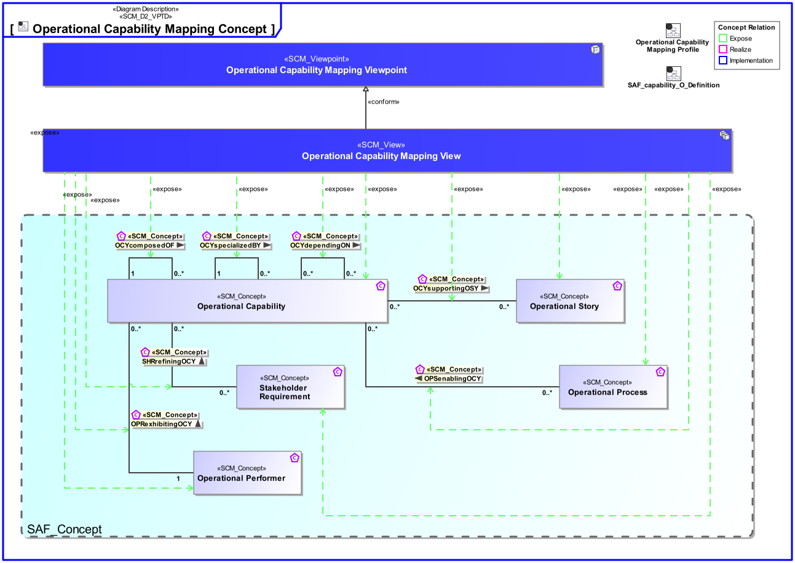
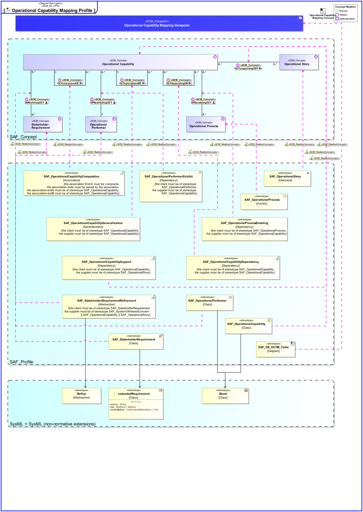

O8_OCYM Operational Capability Mapping Viewpoint
| Domain | Aspect | Maturity |
|---|---|---|
| Operational | Traceability & Mapping |

The Operational Capability Mapping Viewpoint describes the relationships of Operational Capabilities. The reasoning for Operational Capabilities as support for Operational Stories and the contribution of Operational Processes to Capabilities are described. Operational Capabilities encoded in Stakeholder Requirements are identified.
The Operational Capability Mapping Viewpoint supports the “Business or Mission Analysis Process” activities of the INCOSE SYSTEMS ENGINEERING HANDBOOK 2023 [§ 4.1] and contributes to the definition of Operational Capabilities.
A tabular format listing the relationships of Operational Capabilities to Stakeholder Requirements, Operational Stories, and Operational Process Activities.
The following Stereotypes / Model Elements are used in the Viewpoint:
The Diagram shows the concepts exposed by the viewpoint, and related concepts if necessary.

| Concept | Documentation |
|---|---|
| OCYcomposedOF | Specifies the fact that an Operational Capability consists of other Operational Capabilites. |
| OCYdependingON | Specifies the fact that an Operational Capability depends on another Operational Capability. Aliases: UAF::CapabilityDependency |
| OCYspecializedBY | Specifies the fact that an Operational Capability is specialized by other Operational Capability. Aliases: UAF::CapabilityGeneralization |
| OCYsupportingOSY | Specifies the fact that an Operational Story is supported by Operational Capabilities. |
| Operational Capability | A Operational Capability is a high-level description or specification of an organizational unit's ability to execute a specified course of action, to implement a business process or to provide a service. Operational Capabilities typically require people, processes, infrastructure, technology and supporting systems to be implemented. A Operational Capability is an enduring element, its implementation may change over time. A necessary or desired change of a Operational Capability triggers the updated of involved systems or the integration new systems. Aliases: UAF::Capability NAF4::Capability |
| Operational Performer | An Operational Performer is an element of the Operational Context that is capable to perform Operational Process Activities contributing to a specific identified Operational Capability. An Operational Performer may be any kind of organization, person, or even a system playing a role in one or more Operational Contexts. Aliases: UAF::OperationalPerformer |
| Operational Story | The Operational Story represents one or more Operational Use Cases in the Usage Scenario identified by the Operational Context. The Operational Story is described as narrative story-telling. |
| OPRexhibitingOCY | Specifies the fact that an Operational Performer exhibits an Operational Capability under specific environmental conditions. |
| SHRrefiningOCY | Specifies the fact that an Operational Capability is refined by Stakeholder Requirements. |
| Stakeholder Requirement | A Stakeholder Requirement is a Requirement imposed by a Stakeholder. Stakeholder Concerns are refined by Stakeholder Requirements applicable for the SOI. The Stakeholder Requirements are a result of discussions and agreements of how the SOI addresses the Concerns of the respective Stakeholder. |
| Operational Process | An Operational Process captures activity-based operational behavior including scenarios, activity actions, and operational exchange flows, e.g., including information, materials, natural resources, etc. Aliases: UAF::Operational Activity NAF::Logical Activity |
| OPSenablingOCY | Specifies the fact that an Operational Process contributes to the provision of one or more Operational Capabilities in the field. Aliases: UAF::MapsToCapability |
The Diagram shows the implementation of exposed concepts.
